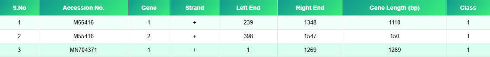

Aim & Objectives
Aim
To predict genes in given genome.
Objectives
- To predict genes in given genome.
Principle
Gene prediction involves identifying coding regions within genomic DNA sequences. Computational tools detect features such as open reading frames, start and stop codons, and splice sites. Statistical models distinguish coding regions from non-coding DNA. Some algorithms use known gene patterns, while others apply machine-learning techniques. Accurate gene prediction helps in genome annotation. It forms the basis for functional and comparative genomics studies.
Output
Gene Prediction and Annotation Results
